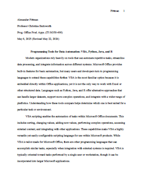

Artifacts - Programming Tools for Data Automation & Structured Data
Description: This artifact presents a short research paper detailing four tools used for data automation and structured data processing: VBA, Python with Pandas, Java with Apache POI, and R. It explains how each tool handles data tasks, automation, integration with other systems, and larger datasets. It also highlights their strengths and best use cases in business, academic, and technical settings.
Selection Rationale: I chose this artifact because it highlights my ability to study and compare different programming tools used in IT and software development. Understanding how these tools work is important for building reliable data workflows. This paper demonstrates my ability to research topics and explain them clearly.
Competencies Demonstrated: This artifact shows my ability to compare different programming tools and explain their strengths and weaknesses along with the skill to choose appropriate tools based on task requirements.
Expected Outcome: As a result of this artifact presentation, readers will have a better understanding of how VBA, Python, Java, and R differ in design, performance, and integration. The paper helps identify which tool fits a specific task, dataset size, or organizational need.
Format: Text-based report

Click here for a link to a PDF of this report.
© 2026 Alexander E. Pittman